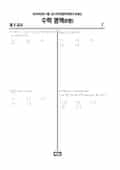

문제지

전국연합학력평가 · 시·도교육청 주관
2014년 4월 고3 학력평가 수학 B형 1등급컷은 원점수 80점(추정), 표준점수 최고점은 159점입니다.
원점수 1등급컷은 공식 발표값이 아니라 EBSi·입시기관 값입니다. 등급별 값은 등급컷 표, 출처 구분은 데이터 원칙에 있습니다.

시험지를 먼저 풀어 보세요. 등급컷·표준점수·난이도는 흐리게 가려 뒀어요.
| 등급 | 원점수 | 표준점수 | 백분위 |
|---|---|---|---|
| 1 | 80 | 139 | 96 |
| 2 | 68 | 126 | 89 |
| 3 | 57 | 115 | 76 |
| 4 | 47 | 105 | 60 |
| 5 | 36 | 93 | 40 |
| 6 | 26 | 83 | 22 |
| 7 | 19 | 76 | 11 |
| 8 | 13 | 70 | 4 |
등급별 컷 · EBSi 원점수 추정 · 만점 100점
EBSi 응답자 기준으로 가장 많이 틀린 문항은 30번(4점, 주관식)이고, 오답률은 94%입니다. 오답률 50%를 넘은 문항은 11개입니다.
| 순위 | 문항 | 배점 | 오답률 | 정답 | 많이 고른 오답 |
|---|---|---|---|---|---|
| 1 | 30번 | 4점 | 94% | 34 | 주관식 |
| 2 | 29번 | 4점 | 81.4% | 120 | 주관식 |
| 3 | 28번 | 4점 | 80.3% | 11 | 주관식 |
| 4 | 21번 | 4점 | 71.4% | ④ | ③ 23.3% |
| 5 | 27번 | 4점 | 68.8% | 13 | 주관식 |
| 6 | 25번 | 3점 | 65.5% | 63 | 주관식 |
| 7 | 19번 | 4점 | 65.5% | ① | ③ 18.9% |
| 8 | 14번 | 4점 | 58.4% | ③ | ② 19.5% |
| 9 | 7번 | 3점 | 53.8% | ① | ③ 34.5% |
| 10 | 16번 | 4점 | 53% | ⑤ | ③ 16.3% |
| 11 | 26번 | 4점 | 52.6% | 36 | 주관식 |
| 12 | 20번 | 4점 | 43.8% | ⑤ | ③ 25% |
| 13 | 17번 | 4점 | 43.8% | ③ | ⑤ 25.3% |
| 14 | 24번 | 3점 | 41.8% | 90 | 주관식 |
| 15 | 18번 | 4점 | 40.4% | ② | ③ 12.8% |
EBSi 가채점 응답자 기준 · 전 문항 중 오답률 상위 15문항
출처: EBSi 역대 등급컷·오답률 공개 화면. 가채점에 참여한 EBSi 이용자 응답이라 전체 응시자 정답률과는 다를 수 있습니다.
발행 기관: 시·도교육청(전국연합학력평가). 파일 위치: 이 사이트가 보관한 사본. 저작권은 발행 기관에 있습니다. 원본과 다르거나 게시 중단이 필요하면 연락처로 알려 주세요. 등급컷 출처 구분은 데이터 원칙에서 설명합니다.
막대 색은 역대 대비 난이도 · 진한 막대가 이 시험 · 막대를 누르면 그 회차로 이동
| 회차 | 1등급컷 | 표점 최고 | 1등급 표점 | 난이도 |
|---|---|---|---|---|
| 4월 학평2014년 고3이 시험 | 80 | 159 | 139 | 어려움 |
| 3월 학평2014년 고3 | 88 | 152 | 141 | 어려움 |
| 3월 학평2013년 고3 | 86 | 152 | 139 | 어려움 |
이 회차 수학 B형은 입시기관 집계 1등급 구분 원점수가 80점으로 A형(82점)보다도 낮았고, 표준점수 최고점은 159점이었습니다. 오답률이 50%를 넘은 문항은 11개였고, 30번은 EBSi 가채점 응답자의 94%가 틀렸습니다. 단답형 마지막 네 문항이 모두 오답률 70~90%대에 몰려, 객관식을 다 맞혀도 1등급을 장담하기 어려웠던 시험입니다.
30번의 f(x) = ln x²/x는 x = 0을 뺀 실수에서 정의된 홀함수이고, x > 0에서 2 ln x/x의 극댓값은 x = e에서 α = 2/e입니다. 방정식 f(x) − (α/n)x = 0의 실근 수는 곡선 y = f(x)와 원점을 지나는 직선 y = (α/n)x의 교점 수입니다. x > 0 쪽만 보면 2 ln x/x² = α/n과 같고, 왼쪽 함수의 최댓값이 x = √e에서 1/e입니다.
α/n = 2/(en)을 1/e와 비교하면 n = 1일 때는 더 커서 교점이 없고, n = 2일 때는 같아서 한 번 접하며, n ≥ 3이면 작아서 두 번 만납니다. 홀함수이므로 x < 0 쪽도 똑같은 수만큼 만나므로 a₁ = 0, a₂ = 2, n ≥ 3에서 aₙ = 4이고, 10까지의 합은 34입니다. 식을 x로 한 번 더 나눈 새 함수 2 ln x/x²의 최댓값과 α/n을 비교하는 것이 핵심입니다.
29번은 반지름 1인 원의 중심 O에서 거리 2인 점 A에서 원과 두 점에서 만나는 두 직선을 그었고, 두 직선이 이루는 각이 π/6입니다. 각 직선이 AO와 이루는 각을 θ₁, θ₂라 하면 O까지의 거리는 2 sin θ로, 원과 만나려면 sin θ < 1/2이어야 하므로 두 직선은 AO의 양쪽에 놓이고 θ₁ + θ₂ = π/6입니다.
2l² + m² = 8 sin²θ₁ + 4 sin²θ₂를 배각 공식으로 정리하면 6 − (5 cos 2θ₁ + √3 sin 2θ₁)이 되고, 괄호 안의 최댓값 2√7이 허용된 범위 안에서 나오므로 최솟값은 6 − 2√7, 답은 30(p + q) = 120입니다.
28번은 선분 OC를 n등분한 점 Dₖ(0, k/n)와 A(−1, 0)를 잇는 직선이 포물선 y = −x² + 1과 다시 만나는 점 Pₖ를 구하는 문항입니다. 기울기를 t = k/n이라 하면 교점의 x좌표가 1 − t로 깔끔하게 나와 삼각형 넓이는 t(2 − t)²/2이고, 구분구적법으로 0부터 1까지 적분하면 α = 11/24, 24α = 11입니다.
21번은 한 변이 2인 정사각형의 중심이 단위원 위를 움직일 때 정사각형 ABCD와 겹치는 넓이의 최댓값을 구했습니다. 중심을 (cos θ, sin θ)로 두면 겹치는 부분은 가로 cos θ, 세로 1 + sin θ인 직사각형이어서, cos θ(1 + sin θ)를 미분하면 sin θ = 1/2에서 최댓값 3√3/4가 나옵니다.